|
Mühendislik Tasarým Çalýþmalarý:
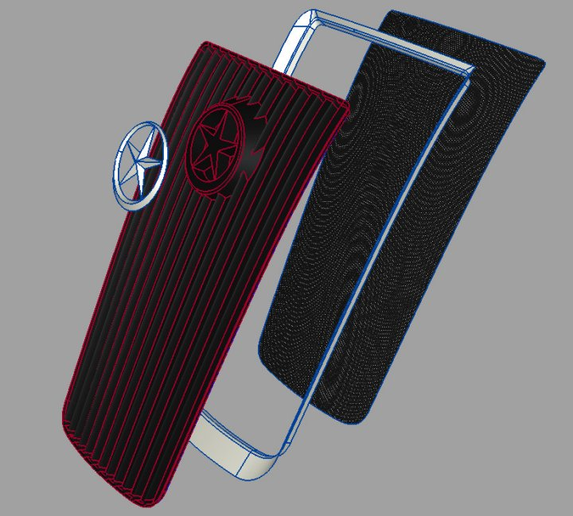
Parçalarýn kendi içindeki montaj detayý çalýþýlýrken, montaj sýrasý ve kolaylýðý her zaman için göz önünde tutuldu.
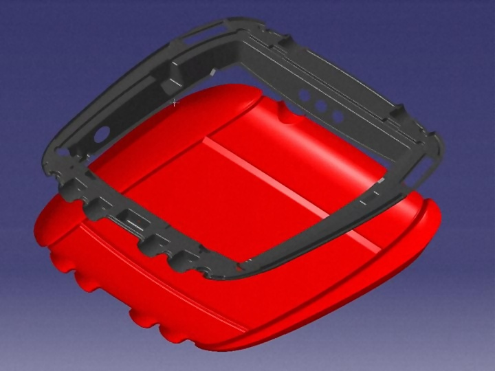
Cadem'in konusunda uzman mühendisleri, ZuluDesign tarafýndan gönderilen yüzey datalarýný kullanarak, malzeme cinsi ve üretim yöntemleri de göz önünde tutarak parçalara kalýnlýk verme, gerekli kalýp açýlarýný verme, kenar kesimlerini yapma, iç kýsýmlarýna konacak parçalarýn tasarlanmasý iþlemlerini gerçekleþtiriyorlar.
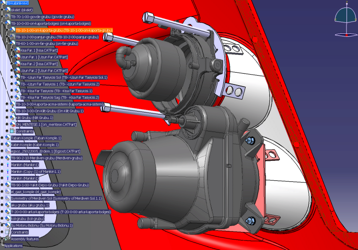
Komponentlerin montaj detaylarý çalýþýlýyor.
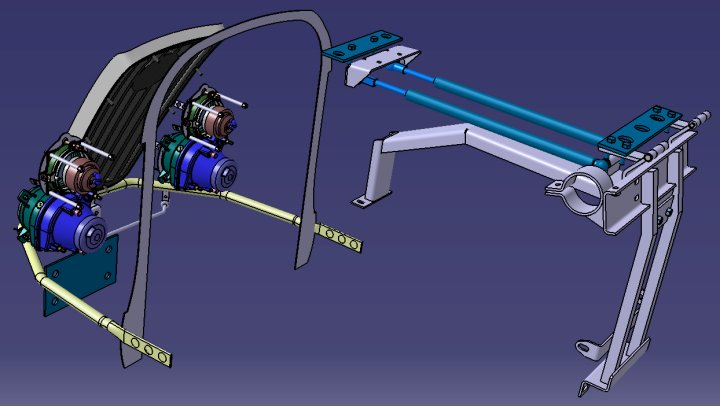
Hareketli mekanizma tasarýmlarý ve simülasyonlarý yapýlýyor.
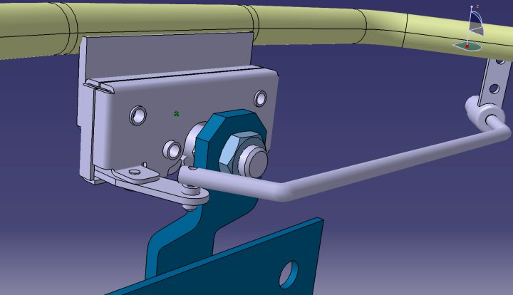
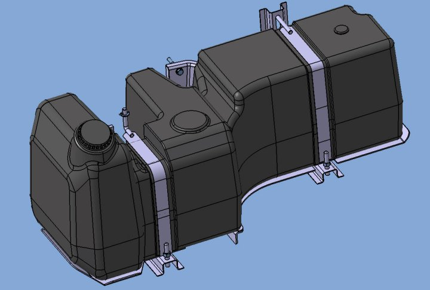
Yakýt deposu çalýþmasý savurma döküm tekniðine uygun olarak yapýldý. Bu üretim tekniðinin verdiði esneklik sayesinde, depo hacmini yüksek tutabilmek amacýyla çok farklý geometrik yüzeyler kullanýlarak mümkün olan tüm boþ hacim deðerlendirildi.
Taþýma gruplarýnýn tasarýmý sýrasýnda da montaj kolaylýðý ve güçlü yapý oluþturmanýn yanýnda komponentlerin baðýmsýz olarak monte ve demonte iþlemlerinin yapýlabilmesi saðlandý.
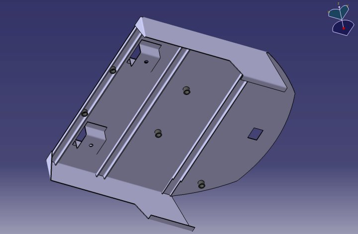
Sac parçalardan oluþan farklý taþýma gruplarý tasarlandý.
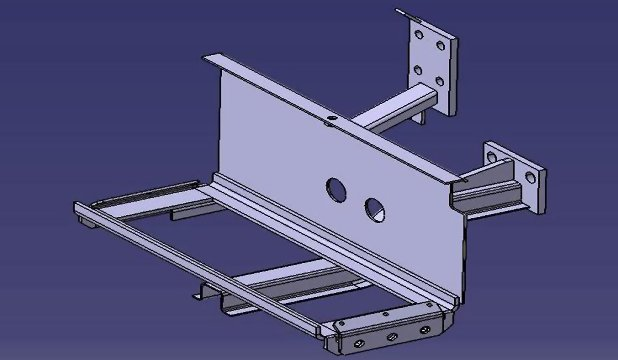
Tüm sac parçalar "Sheetmetal" yöntemiyle çalýþýldýðý için açýným almak ve hýzlý bir þekilde üretime geçmek avantajý kullanýlýyor.
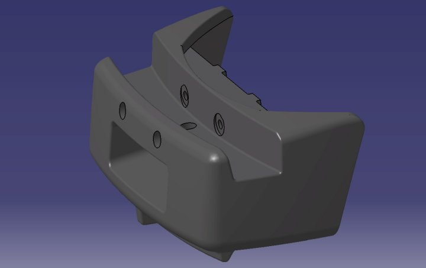
Döküm parça tasarýmlarýna örnekler...
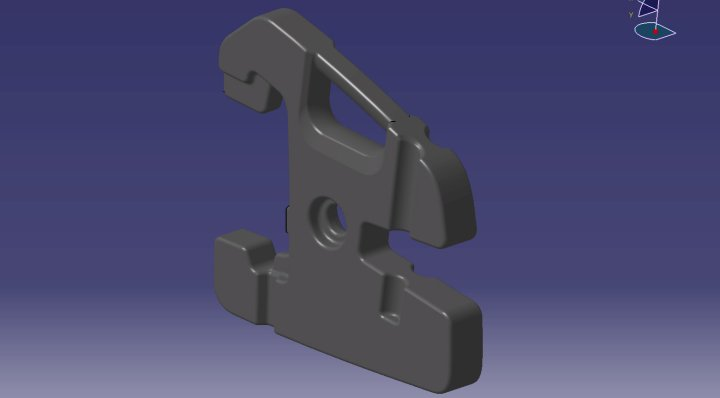
Ergonomi Çalýþmalarý:
CATIA'nýn ergonomi modülünün saðladýðý geniþ imkanlar dahilinde, henüz tasarým aþamasýndayken gerek kullanýcýnýn gerekse diðer yolcularýn hareketlerini simüle ediyoruz. Tasarým çalýþmalarýmýzda her ne kadar Sanayii ve Ticaret Bakanlýðý'nýn ilgili regülasyon þartlarýna uyuyor olsak da, gerek bu þartlarýn ilgilendirdiði gerekse ilgilendirmediði bölgelerde kullanýcýn ergonomi açýsýndan durumunu inceliyoruz. Bu çalýþma için "standart manken" kullanabildiðimiz gibi boyu, kilosu ve diðer özellikleri bizim tarafýmýzdan tanýmlanabilen mankenler de kullanabiliyoruz.
Bir insanýn hareket edebilen tüm uzuvlarýný gerçeðiyle bire bir þekilde simüle edebiliyoruz.
Böylelikle kullanýcý araca rahat inip binebiliyor mu, pedallara rahat basabiliyor mu, direksiyonu rahat kavrayabiliyor mu, sinyal kollarýna rahat ulaþabiliyor mu, görüþ açýsý rahat mý gibi sorularýn cevabýný henüz tasarým aþamasýnda alabiliyoruz. Böylelikle geleneksel yöntemlerde prototip araç üretildikten sonra ortaya çýkacak ve büyük oranda maliyet ve zaman kaybýna neden olabilecek sorunlarýn büyük kýsmýný henüz çalýþmanýn baþýnda engellemiþ oluyoruz.
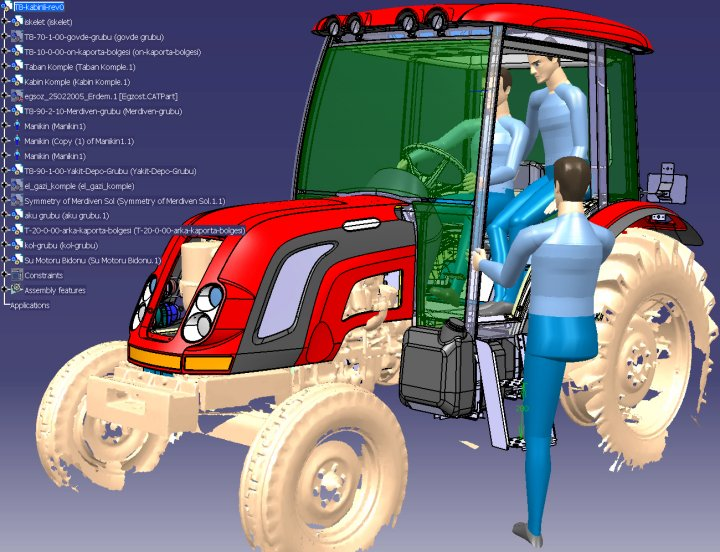
Kullanýcýlarýn araç içindeki konumlarý, araca inip binerken tutunulan ve basýlan yerlerin incelenmesine örnek çalýþmalar
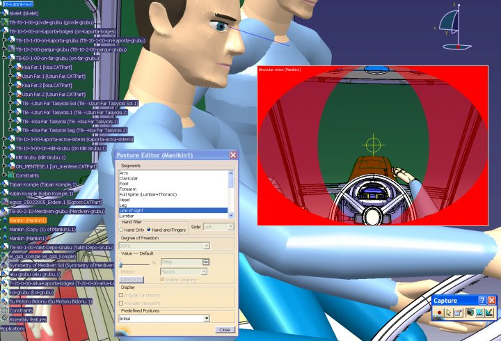
Sürücünün görüþ alanýný inceliyoruz. Böylelikle çalýþmanýn baþýnda henüz bilgisayar ortamýnda, sürücünün tekerlek izini veya diðer gerekli yerleri görmesini garanti altýna alýyoruz.
Analiz Çalýþmalarý:
Analiz çalýþmalarýnda yine CATIA'nýn analiz modüllerini kullanabildiðimiz gibi parçanýn geometrisine ve kullaným amacýna uygun olarak daha farklý programlar da kullanýyoruz. Bu analiz çalýþmalarýnda daha çok taþýyýcý gruplar ve emniyet parçalarý üzerinde yoðunlaþýyoruz. Zaten belli parçalar fiziksel olarak yine resmi kurumlar tarafýndan teste tabii tutuluyorlar. Örnek olarak kabinlere Ankara'da deðiþik testler uygulanýyor. Burada kabin karkasýna deðiþik açýlardan yüklemeler yapýlarak sürücünün yaþam alanýna bir müdahale olup olmadýðý inceleniyor ve sonuçlarýna göre kabinler belge alýp seri olarak üretilebilir duruma gelebiliyorlar. Biz bu tip testleri sanal ortamda gerçekleþtirilerek ortaya çýkan sonuçlara göre zayýf görünen yerlerde gerekli iyileþtirmeleri yapýyoruz. Böylelikle baþarýsýz testler sonucunda oluþabilecek olan zaman kaybý, maliyet artýþý ve prestij kaybýnýn önüne geçiyoruz.
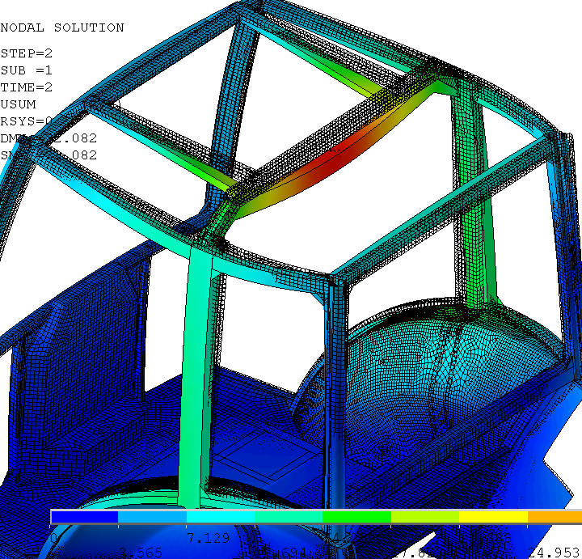
Sanal test sonucunda oluþan deformasyonun test öncesiyle karþýlaþtýrýlmasýna bir örnek.
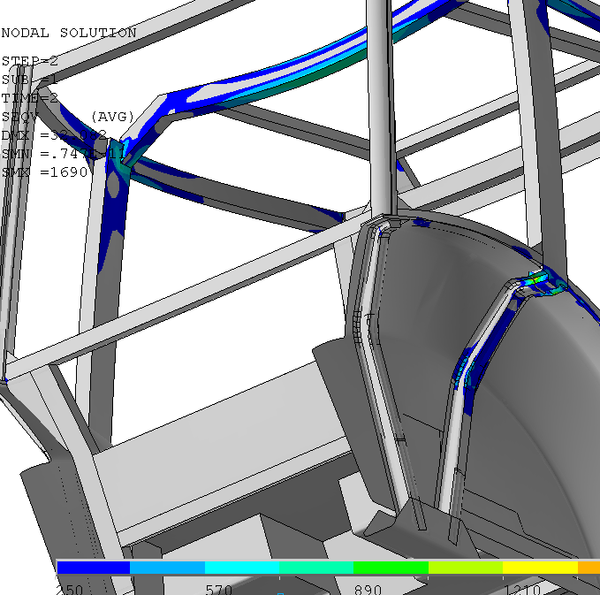
Farklý yüklemeler sonucunda ortaya çýkan farklý sonuçlar yine uzmanlarýmýz tarafýndan incelenerek önlem alýnmasýna gerek olup olmadýðý belirleniyor.
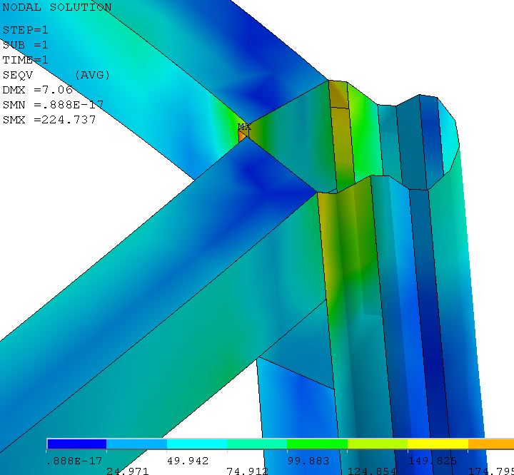
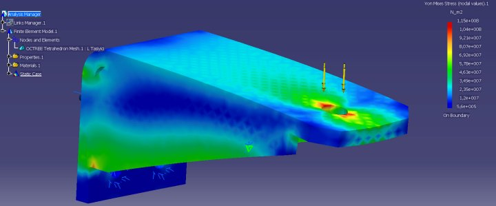
Kritik parçalarýn farklý yüklemeler altýnda analiz çalýþmalarýna bir örnek:Kabin taþýyýcý parçanýn CATIA'da analizi
|